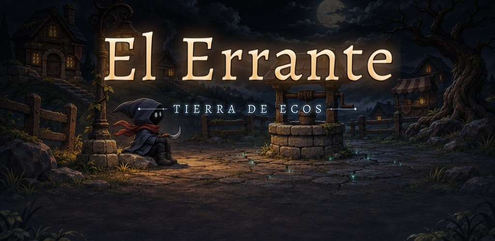
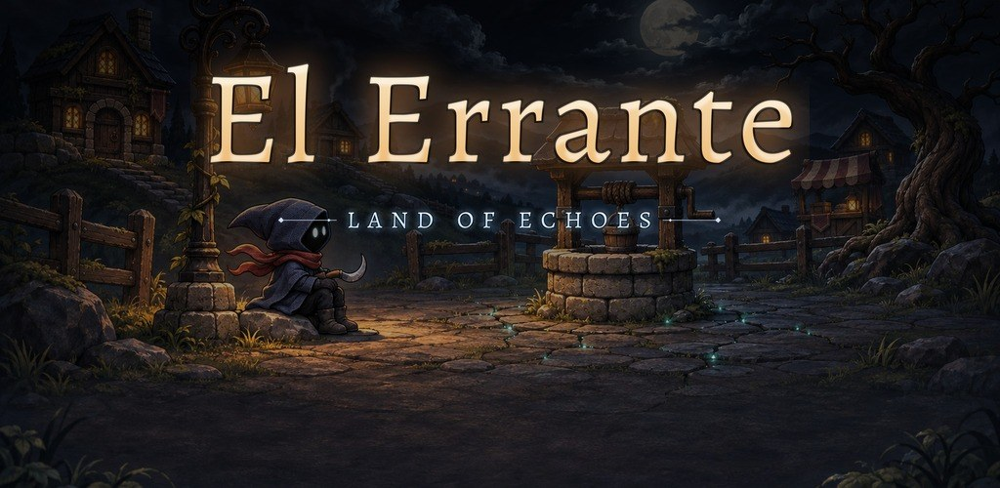
Bajo la aldea de Pozoalto se abre un mundo hundido. El Errante, un pequeño viajero encapuchado con su hoz, baja por el pozo para descubrir qué queda ahí abajo.
Beneath the village of Highwell lies a sunken world. The Wanderer, a small hooded traveller with a sickle, climbs down the well to find out what remains below.
Gratis, sin anuncios, sin compras y sin conexión. Todas las versiones
Free, no ads, no purchases, no internet needed. All versions
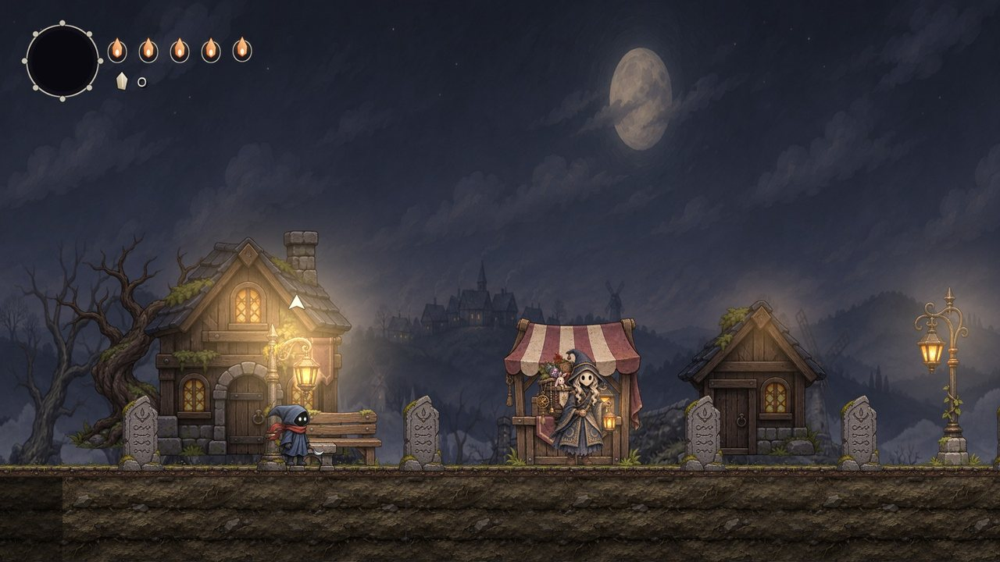
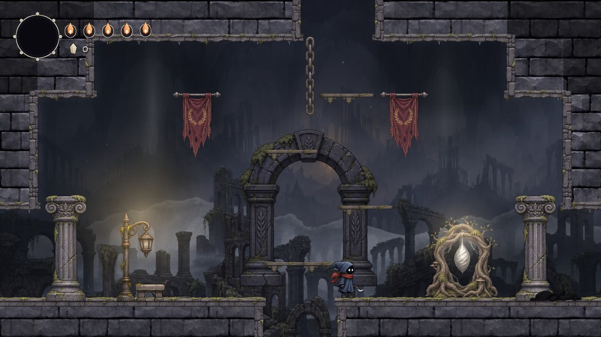
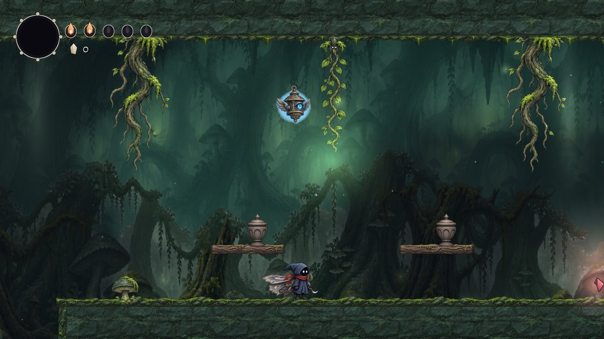
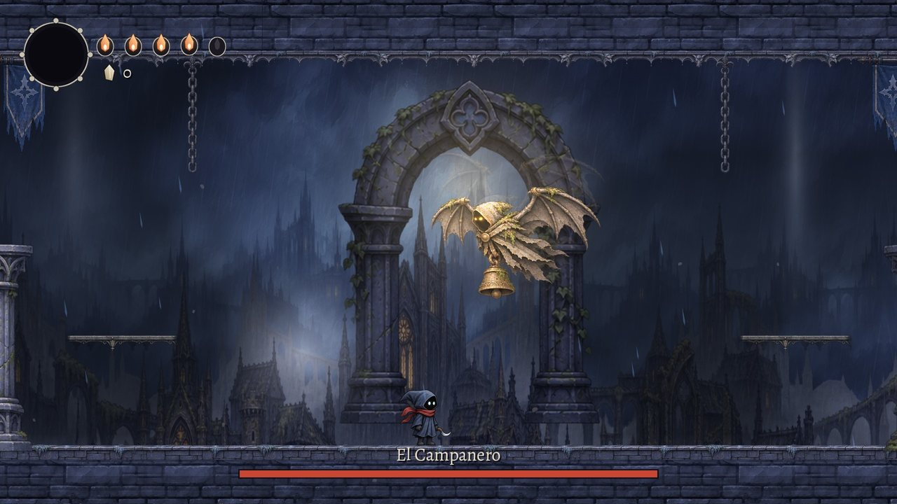
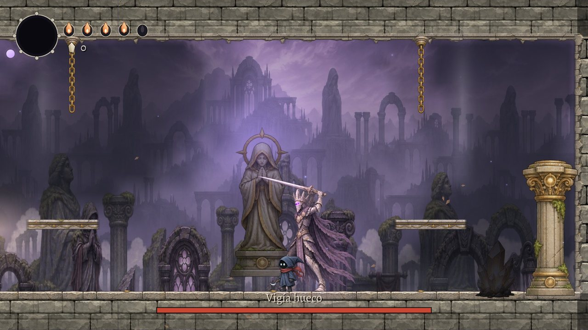
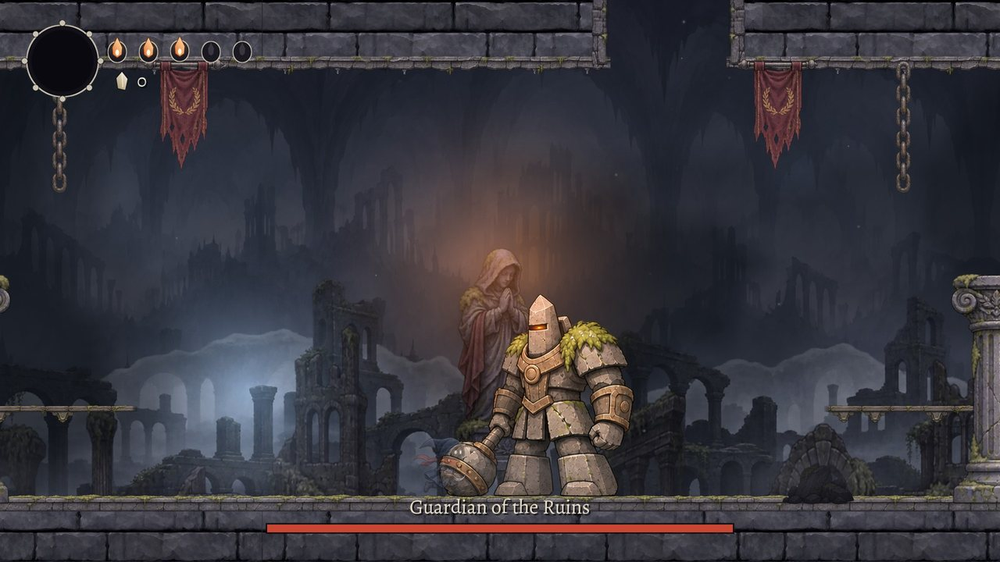
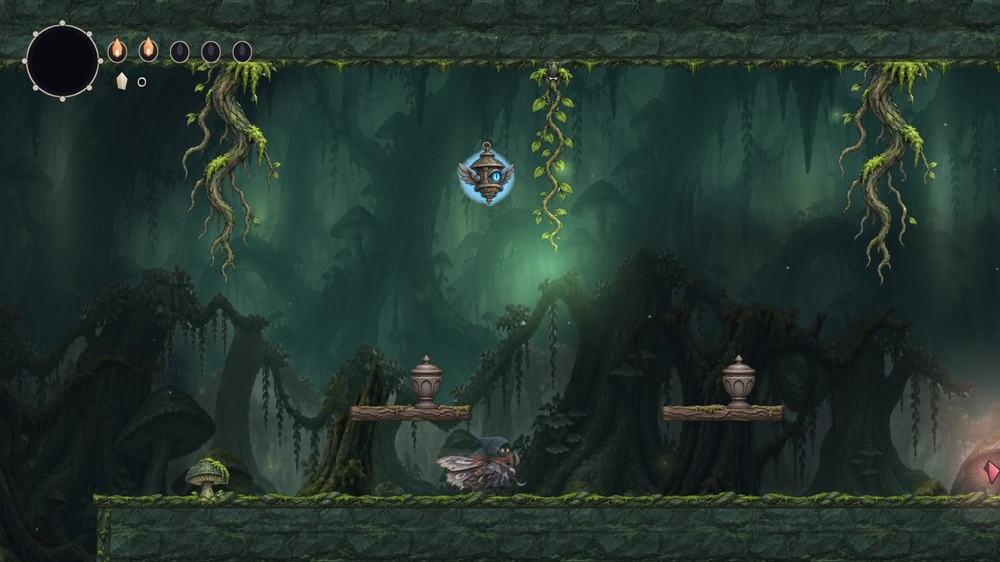
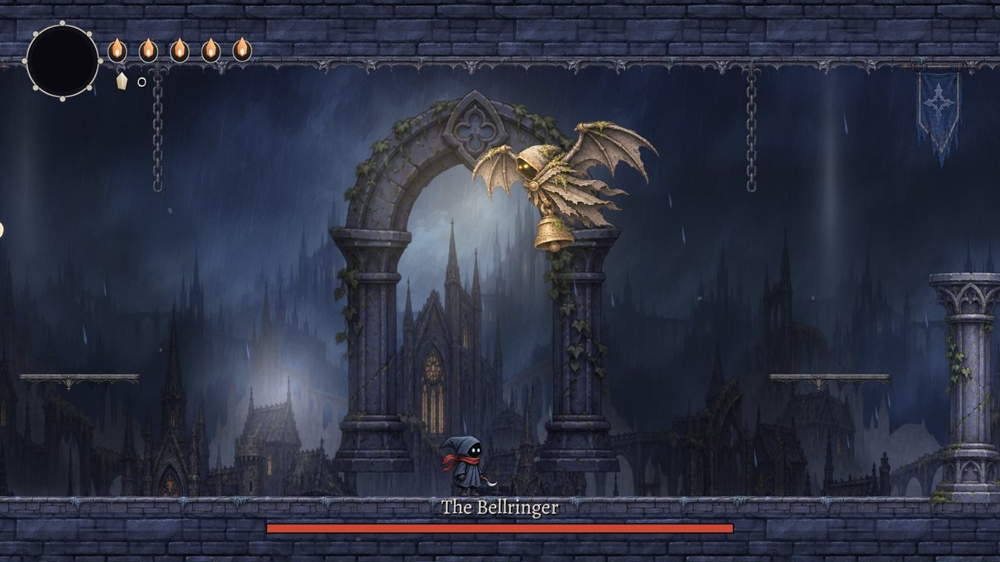
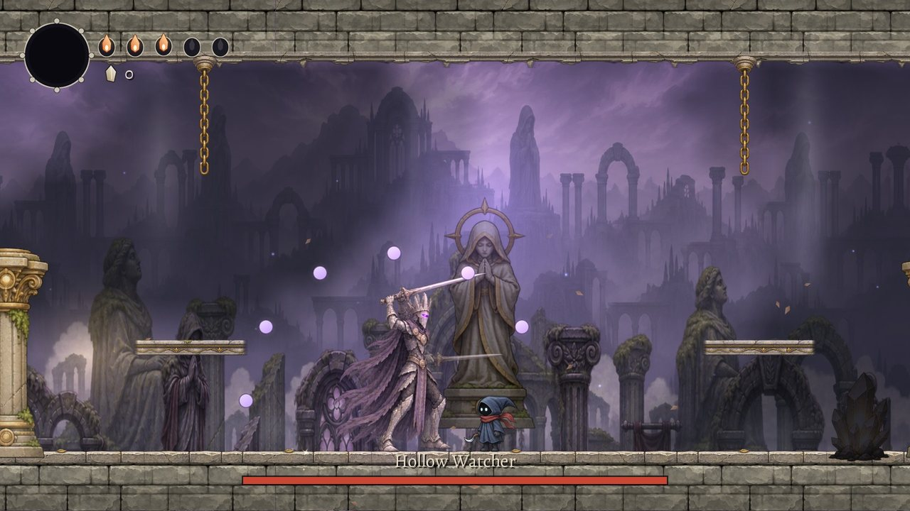
Ruinas Olvidadas, Bosque Subterráneo, Ciudad Abandonada, Profundidades y Santuario, con atajos, muros secretos y salas escondidas.
Salto variable, impulso, doble salto y garra para rebotar en las paredes. Cada habilidad abre caminos nuevos.
Tajos a los lados, arriba y abajo. La esencia que ganas golpeando se convierte en vida o en artes especiales.
Jefes con varias fases, catorce tipos de enemigo, emblemas que cambian tu forma de jugar y vendedores escondidos.
Dos jugadores con mando, con puertas y salas que solo se abren juntos. Un segundo jugador puede unirse en cualquier momento.
Cuatro partidas guardadas más la cooperativa. Nada sale de tu dispositivo.
Forgotten Ruins, Underground Forest, Abandoned City, The Depths and Sanctuary, with shortcuts, secret walls and hidden rooms.
Variable jump, dash, double jump and a claw to bounce off walls. Every skill opens new paths.
Slash sideways, up and down. The essence you gain by hitting turns into health or special arts.
Multi-phase bosses, fourteen kinds of enemy, emblems that change how you play and hidden merchants.
Two players with gamepads, with doors and rooms that only open together. A second player can join at any time.
Four save slots plus co-op. Nothing leaves your device.
| Acción | Pantalla táctil | Mando | Teclado |
|---|---|---|---|
| Moverse | Palanca (mitad izquierda) | Cruceta / palanca | Flechas / WASD |
| Saltar | A | A | Z / Espacio |
| Atacar | X | X | X / J |
| Curar · arte de esencia | B | B / Y | V / L |
| Impulso | Y | RB / RT | C / K / Mayús |
| Mapa · Pausa | Botones de arriba | Select · Start | Tab · Esc |
| Action | Touchscreen | Gamepad | Keyboard |
|---|---|---|---|
| Move | Stick (left half) | D-pad / stick | Arrows / WASD |
| Jump | A | A | Z / Space |
| Attack | X | X | X / J |
| Heal · essence art | B | B / Y | V / L |
| Dash | Y | RB / RT | C / K / Shift |
| Map · Pause | Top buttons | Select · Start | Tab · Esc |
En Fire TV también se puede jugar con el mando de la tele: arriba salta, el botón central ataca, abajo cura y dos toques a un lado hacen el impulso.
On Fire TV you can also play with the TV remote: up jumps, the centre button attacks, down heals and a double tap to one side dashes.
ElErrante-Android.apk desde el teléfono.ElErrante-Windows.zip y descomprímelo.ElErrante.exe. Si Windows avisa, pulsa «Más información» → «Ejecutar de todas formas».ElErrante-Android.apk on the phone.ElErrante-Windows.zip and unzip it.ElErrante.exe. If Windows warns you, click “More info” → “Run anyway”.Español · English · Français · Deutsch · Italiano · Português · Русский · 日本語 · 한국어 · 中文 · Polski